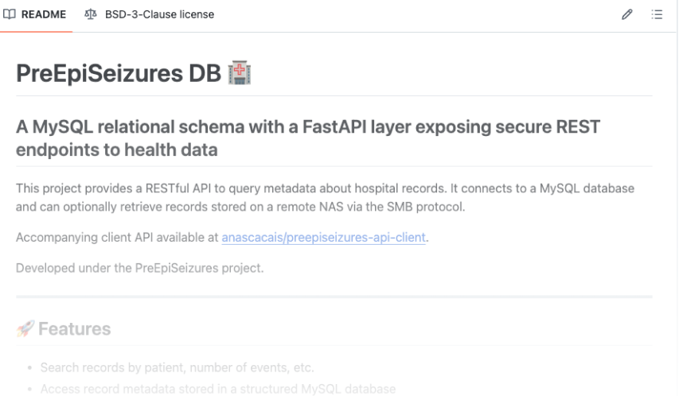
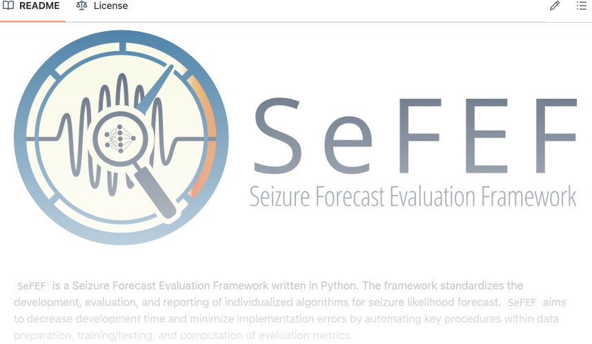
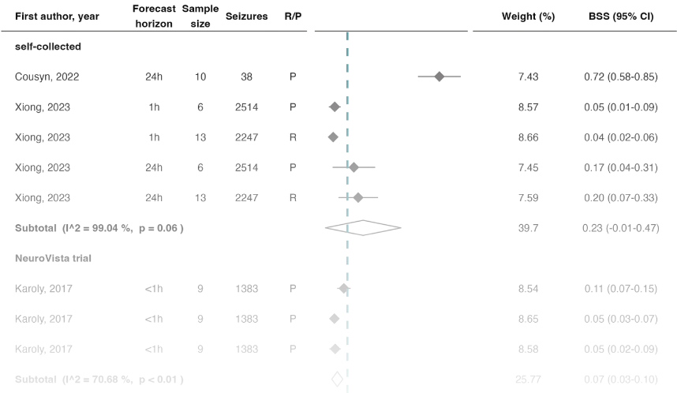
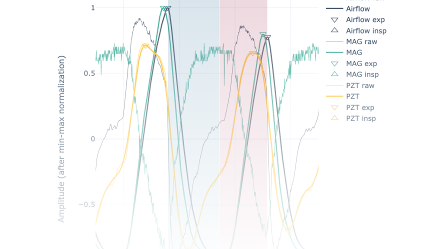
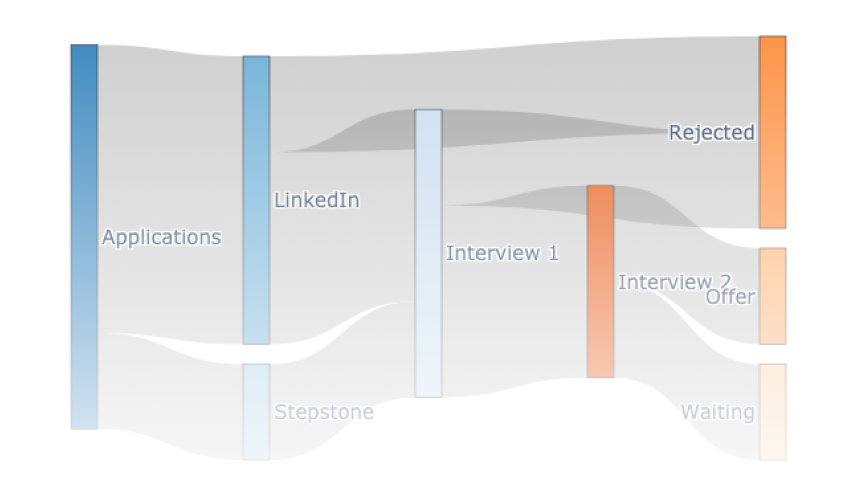
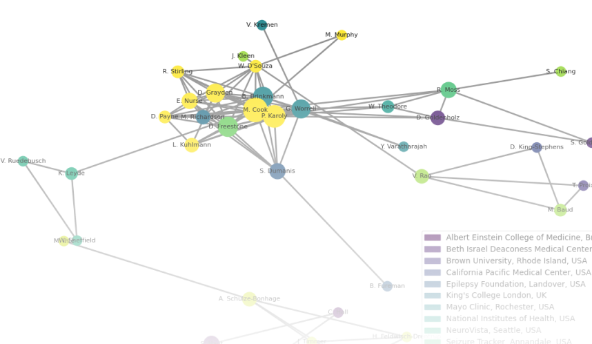

Ana Sofia Carmo
Data Science | Time-Series ML | (Almost) PhD

✨ Project Highlights ✨
PreEpiSeizures Database
FastAPI ● client API ● MySQL ● query dataset metadata ● SMB protocol
SeFEF: A Seizure Forecast Evaluation Framework
model development ● model evaluation ● reproducibility ● framework ● Python programming
Customizing forest plots in R
R programming ● meta-analysis ● statistical analysis ● forest plot
Prototype validation: Data analysis on respiratory data
time series analysis ● statistical analysis ● Python programming
Sankey Diagram for Job Application Flow
data visualization ● communication ● Sankey diagram ● Plotly
Visualizing the main players of a field
network ● graphs ● visualization tool ● Python programming
A tool to stimulate collaboration in data collection
data collection ● time series ● user interface ● mobile app